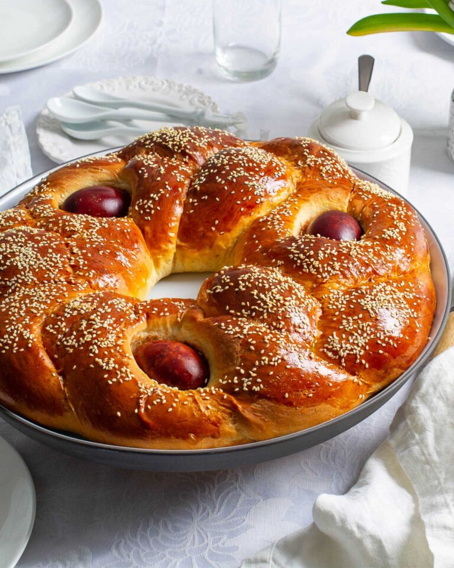
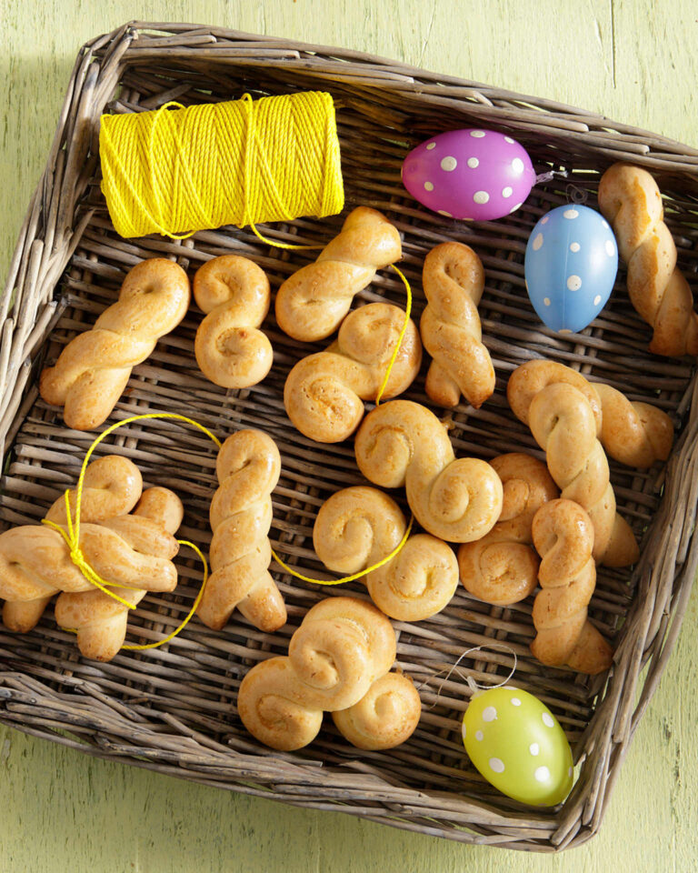
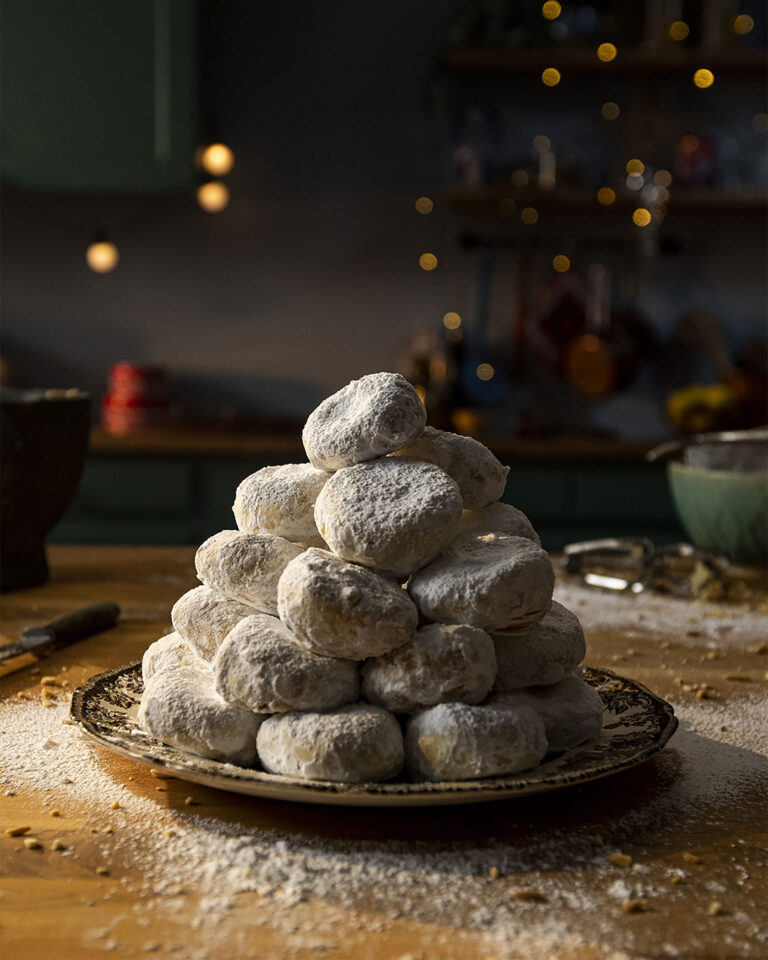
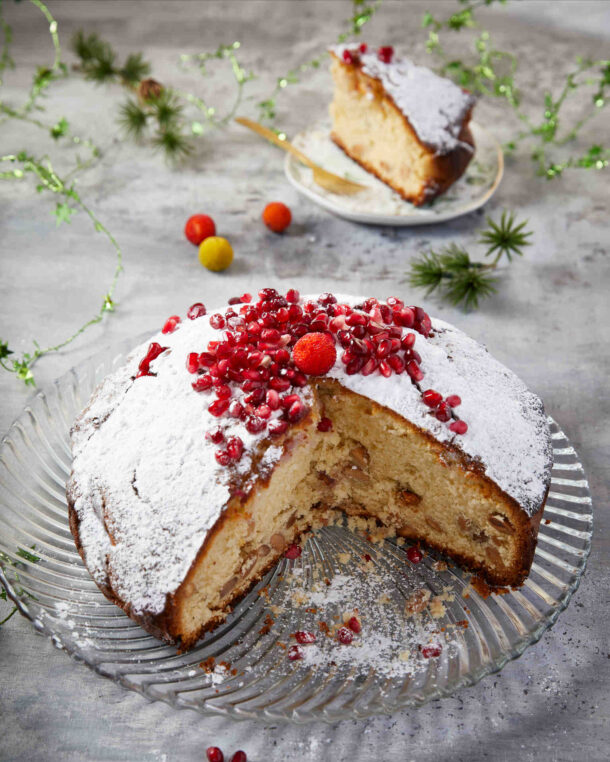
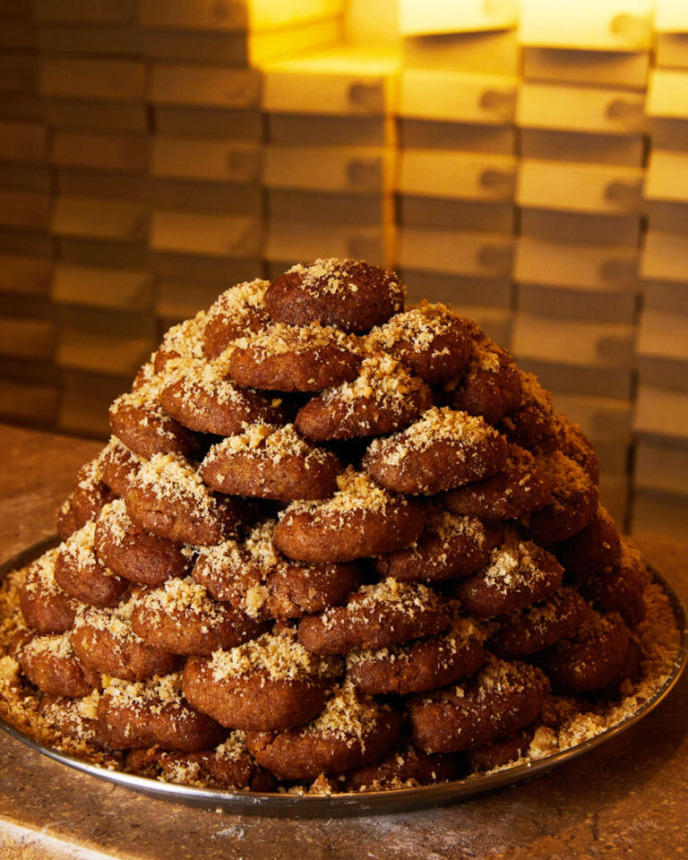
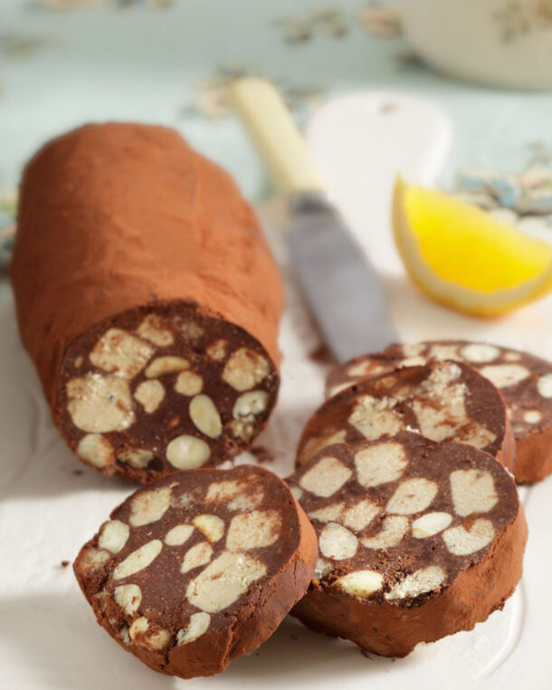

Τσουρέκι-στεφάνι με κόκκινα αυγά

- Για το τσουρέκι-στεφάνι με κόκκινα αυγά, διαλύουμε 3 φακελάκια ξηρή μαγιά σε 110 γρ. χλιαρό νερό
με λίγη ζάχαρη και αφήνουμε να ενεργοποιηθεί. Σε χαμηλή φωτιά λιώνουμε 140 γρ. βούτυρο Lurpak με
250 γρ. ζάχαρη και 150 ml γάλα. Αφήνουμε να κρυώσει και προσθέτουμε 4 αυγά και το μείγμα μαγιάς.
- Στο μίξερ ανακατεύουμε 900 γρ. αλεύρι για τσουρέκι, κοπανισμένη μαστίχα (3 κρυσταλλάκια), 10 γρ.
μαχλέπι και ξύσμα από 1 πορτοκάλι. Προσθέτουμε το υγρό μείγμα και ζυμώνουμε 15 λεπτά μέχρι να
γίνει ελαστική ζύμη. Την αφήνουμε να φουσκώσει για 1½ ώρα.
- Χωρίζουμε τη ζύμη σε 4 κομμάτια, πλάθουμε κορδόνια και φτιάχνουμε δύο πλεξούδες, βάζοντας 3
βρασμένα κόκκινα αυγά σε κάθε μία. Ενώνουμε τις άκρες σε στεφάνι και τα βάζουμε σε ταψί με
λαδόκολλα.
- Αφήνουμε να φουσκώσουν 1 ώρα, αλείφουμε με 1 αυγό ανακατεμένο με 1 κουτ. σούπας γάλα,
πασπαλίζουμε με σουσάμι και ψήνουμε στους 150°C με αέρα για 40 λεπτά. Αν χρειαστεί, τα
καλύπτουμε με λαδόκολλα. Αφήνουμε να κρυώσουν καλά.
Πασχαλινά κουλουράκια

- Για τα πασχαλινά κουλουράκια με άρωμα τσουρεκιού, βράζουμε για 10 λεπτά τις φλούδες από
2 μανταρίνια ή 1 πορτοκάλι, σουρώνουμε και πολτοποιούμε.
- Στο μίξερ χτυπάμε 200 γρ. βούτυρο με 2 κούπες ζάχαρη για 5-6 λεπτά και προσθέτουμε 3
αυγά ένα-ένα. Ρίχνουμε τις πολτοποιημένες φλούδες και προσθέτουμε 1 κουτ. γλυκού μαστίχα
(κοπανισμένη με λίγη ζάχαρη) και 1 κουτ. γλυκού μαχλέπι.
- Συνεχίζουμε προσθέτοντας 1 κουτ. γλυκού μπέικιν πάουντερ, 1 τσιμπιά αλάτι, 1 κουτ.
γλυκού σόδα μαγειρική και 4 κουτ. σούπας γάλα. Ρίχνουμε εναλλάξ 1 κιλό αλεύρι για όλες
τις χρήσεις και 2/3 κούπας χυμό μανταρινιού ή πορτοκαλιού, ώστε να πάρουμε μια μαλακή
και εύπλαστη ζύμη. Την αφήνουμε 30 λεπτά να ξεκουραστεί.
- Προθερμαίνουμε τον φούρνο στους 180°C, πλάθουμε κουλουράκια και τα αραδιάζουμε σε
λαμαρίνα με λαδόκολλα. Αλείφουμε με 1 κρόκο αυγού αραιωμένο με 4 κουτ. σούπας νερό και
ψήνουμε για 20-25 λεπτά. Αφήνουμε να κρυώσουν καλά πριν τα αποθηκεύσουμε σε αεροστεγές
δοχείο.
Κουραμπιέδες

- Καβουρδίζουμε 120 γρ. αμύγδαλα στους 160°C για 8-10 λεπτά και τα σπάμε
χοντροκομμένα.
- Χτυπάμε στο μίξερ 300 γρ. βούτυρο Lurpak® με 110 γρ. ζάχαρη άχνη για 20 λεπτά να
αφρατέψει.
- Ρίχνουμε σταδιακά 600 γρ. αλεύρι, 1/2 κουτ. γλυκού μπέικιν πάουντερ, 1 κουτ.
γλυκού άρωμα βανίλιας και συνεχίζουμε το χτύπημα για 10 λεπτά.
- Προσθέτουμε το αμύγδαλο και 25 γρ. ρούμι ή κονιάκ και ανακατεύουμε.
- Πλάθουμε μπαλάκια 3 εκ., τα πιέζουμε ελαφρά και τα ψήνουμε σε λαμαρίνα με
λαδόκολλα στους 170°C για 20-30 λεπτά.
- Αφού κρυώσουν, τα περνάμε σε μπολ με άχνη και τα στήνουμε σε πυραμίδα,
πασπαλίζοντας κάθε στρώση με ζάχαρη άχνη.
Η βασιλόπιτα του Μοναχού Επιφάνιου

- Χτυπάμε 250 γρ. βούτυρο με 1/2 κιλό ζάχαρη και λίγο αλάτι να αφρατέψουν.
- Προσθέτουμε 1/2 κιλό αλεύρι, 1 φακελάκι μπέικιν πάουντερ, τους κρόκους
από 6 αυγά, 1 κουτ. γλυκού μαχλέπι, 1 φακελάκι βανίλια και 250 γρ. Γάλα.
- Χτυπάμε τα ασπράδια σε μαρέγκα και τα ενσωματώνουμε απαλά στο μείγμα.
Ρίχνουμε 300 γρ. ψημένα αμύγδαλα και ανακατεύουμε.
- Απλώνουμε σε βουτυρωμένο στρογγυλό ταψί, κρύβουμε το φλουρί και ψήνουμε
στους 180°C για 40-45 λεπτά.
- Δοκιμάζουμε με μαχαίρι. Αφού κρυώσει, στολίζουμε και γράφουμε τη
χρονολογία.
Μελομακάρονα

- Σε μεγάλο μπολ ανακατεύουμε 370 γρ. ζεστό νερό, 600 γρ.
ηλιέλαιο, 1/2 κουτ. γλυκού γαρίφαλο, 1/2 κουτ. γλυκού κανέλα, 8
γρ. σόδα, 15 γρ. αμμωνία, 50 γρ. μέλι, 60 γρ. ζάχαρη και ξύσμα
από 1 πορτοκάλι.
- Χτυπάμε καλά να λιώσει η ζάχαρη. Σε άλλο μπολ ανακατεύουμε 750
γρ. μαλακό αλεύρι, 350 γρ. ψιλό σιμιγδάλι και 8 γρ. Αλάτι.
- Ανοίγουμε λακκούβα στο αλεύρι και ρίχνουμε το υγρό μείγμα.
Ανακατεύουμε απαλά μέχρι να ενωθούν
- Πλάθουμε μικρά μελομακάρονα και τα ψήνουμε στους 180°C με αέρα
για περίπου 20 λεπτά.
- Παράλληλα, ετοιμάζουμε σιρόπι με 500 γρ. μέλι και 500 ml νερό,
αφήνοντάς το να πάρει μία βράση και μετά το αποσύρουμε.
- Βουτάμε τα καυτά μελομακάρονα στο χλιαρό σιρόπι για 1 λεπτό, τα
στραγγίζουμε και τα στρώνουμε σε δίσκο.
- Ραντίζουμε με επιπλέον μέλι (κατά προτίμηση θυμαρίσιο) και
πασπαλίζουμε άφθονη ψιλοκοπανισμένη καρυδόψιχα.
Μωσαϊκό νηστίσιμο με έτοιμο χαλβά

- Κόβουμε 500 γρ. χαλβά βανίλια σε κύβους και 250 γρ.
κουβερτούρα σε κομμάτια.
- Λιώνουμε την κουβερτούρα σε μπεν μαρί, αποσύρουμε και
αφήνουμε να κρυώσει.
- Προσθέτουμε 70 γρ. απαλό ελαιόλαδο, 1/2 κουτ. γλυκού
κανέλα, 1/2 κουτ. γλυκού ξύσμα πορτοκαλιού, τον χαλβά
και 70 γρ. καβουρδισμένα αμύγδαλα.
- Ανακατεύουμε καλά και αδειάζουμε το μείγμα σε
λαδόκολλα, δίνοντάς του σχήμα σαλαμιού.
- Τυλίγουμε σαν καραμέλα και τοποθετούμε στην κατάψυξη για
τουλάχιστον 1 ώρα.
Ξετυλίγουμε, ρολάρουμε σε κακάο και κόβουμε σε κομμάτια.
 Spoon Theory
Spoon Theory